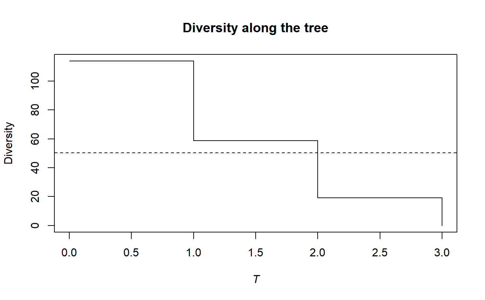
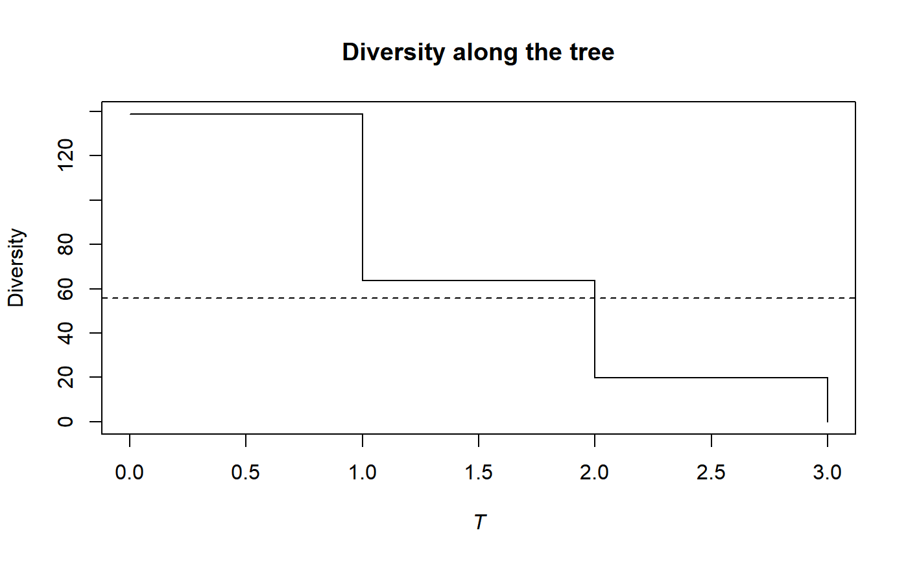

PhyloDiversity.RdCalculates the phylogenetic diversity of order \(q\) of a probability vector.
PhyloDiversity(NorP, q = 1, Tree, Normalize = TRUE, ...) bcPhyloDiversity(Ns, q = 1, Tree, Normalize = TRUE, Correction = "Best", CheckArguments = TRUE) # S3 method for ProbaVector PhyloDiversity(NorP, q = 1, Tree, Normalize = TRUE, ..., CheckArguments = TRUE, Ps = NULL) # S3 method for AbdVector PhyloDiversity(NorP, q = 1, Tree, Normalize = TRUE, Correction = "Best", ..., CheckArguments = TRUE, Ns = NULL) # S3 method for integer PhyloDiversity(NorP, q = 1, Tree, Normalize = TRUE, Correction = "Best", ..., CheckArguments = TRUE, Ns = NULL) # S3 method for numeric PhyloDiversity(NorP, q = 1, Tree, Normalize = TRUE, Correction = "Best", ..., CheckArguments = TRUE, Ps = NULL, Ns = NULL) is.PhyloDiversity(x) # S3 method for PhyloDiversity summary(object, ...)
| Ps | A probability vector, summing to 1. |
|---|---|
| Ns | A numeric vector containing species abundances. |
| NorP | A numeric vector, an integer vector, an abundance vector ( |
| q | A number: the order of diversity. Default is 1. |
| Tree | An object of class |
| Normalize | If |
| Correction | A string containing one of the possible corrections: |
| CheckArguments | Logical; if |
| x | An object to be tested or plotted |
| object | A |
| ... | Additional arguments to be passed to the generic methods. |
The phylogenetic entropy is its generalization of HCDT entropy to unequal species distances (Pavoine et al., 2009).
Diversity is obtained by transforming generalized entropy.
Bias correction requires the number of individuals to estimate sample Coverage. Use bcPhyloDiversity and choose the Correction.
The functions are designed to be used as simply as possible. PhyloDiversity is a generic method. If its first argument is an abundance vector, an integer vector or a numeric vector which does not sum to 1, the bias corrected function bcPhyloDiversity is called. Explicit calls to bcPhyloDiversity (with bias correction) or to PhyloDiversity.ProbaVector (without correction) are possible to avoid ambiguity. The .integer and .numeric methods accept Ps or Ns arguments instead of NorP for backward compatibility.
The tree must contain all species of the probability vector. If it contains extra species, computation time will just be increased.
An object of class PhyloDiversity is a list:
The distribution used to calculate diversity
The function used to calculate diversity
The functional or phylogenetic tree used to calculate diversity
Logical. Indicates whether phylodiversity is normalized or proportional to the height of the tree.
The type of diversity ("alpha", "beta" or "gamma").
The order of diversity \(q\).
A named vector containing values of neutral diversity along the tree. Names are cut ends, i.e. the ends of intervals (the first interval starts at 0 for leaves, the max value is the height of the tree).
A value equal the total diversity (obtained by transforming the total normalized entropy), multiplied by the tree height if Normalize is FALSE.
Chao, A., Chiu, C.-H. and Jost, L. (2010). Phylogenetic diversity measures based on Hill numbers. Philosophical Transactions of the Royal Society B 365(1558): 3599-609.
Marcon, E., Herault, B. (2015). Decomposing Phylodiversity. Methods in Ecology and Evolution 6(3): 333-339.
Pavoine, S., Love, M. S. and Bonsall, M. B. (2009). Hierarchical partitioning of evolutionary and ecological patterns in the organization of phylogenetically-structured species assemblages: Application to rockfish (genus: Sebastes) in the Southern California Bight. Ecology Letters 12(9): 898-908.
# Load Paracou data (number of trees per species in two 1-ha plot of a tropical forest # and their taxonomy) data(Paracou618) # Ps is the vector of probabilities Ps <- as.ProbaVector(Paracou618.MC$Ps) # Calculate the phylogenetic Shannon diversity of the plot summary(PhyloDiversity(Ps, 1, Paracou618.Taxonomy) -> d)#> alpha or gamma phylogenetic or functional diversity of order 1 of distribution #> - #> with correction: None #> Phylogenetic or functional diversity was calculated according to the tree #> Paracou618.Taxonomy #> #> Diversity is normalized #> #> Diversity equals: 50.39747plot(d)# Ns is the vector of abundances of the metacommunity Ns <- as.AbdVector(Paracou618.MC$Ns) # Calculate the phylogenetic Shannon diversity of the plot summary(bcPhyloDiversity(Ns, 1, Paracou618.Taxonomy, Correction = "Best") -> d)#> alpha or gamma phylogenetic or functional diversity of order 1 of distribution #> - #> with correction: Best #> Phylogenetic or functional diversity was calculated according to the tree #> Paracou618.Taxonomy #> #> Diversity is normalized #> #> Diversity equals: 55.64502plot(d)